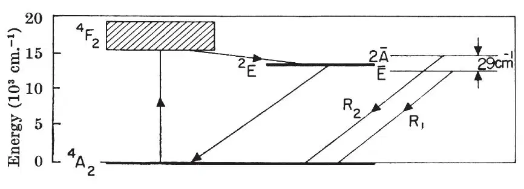
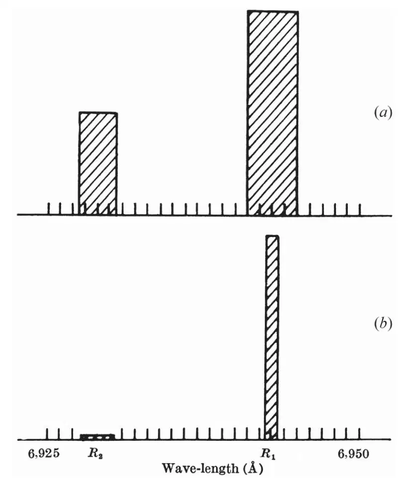

中文
中文T. H. Maiman
Editor’s Note
Albert Einstein identified the phenomenon of the stimulated emission of radiation early in the 20th century—how radiation of a particular frequency could stimulate more of the same to be emitted in an excited medium. Here Theodore Maiman of the Hughes Research Laboratories in California reported the first observation of the effect in a cube of ruby with ends coated with reflective silver. These mirrors create an “optical cavity” within which light bounces back and forth to stimulate emission from chromium ions in an electronically excited state. This “light amplification by stimulated emission of radiation” was the first basic demonstration of the principles of laser action. 中文
SCHAWLOW and Townes1 have proposed a technique for the generation of very monochromatic radiation in the infra-red optical region of the spectrum using an alkali vapour as the active medium. Javan2 and Sanders3 have discussed proposals involving electron-excited gaseous systems. In this laboratory an optical pumping technique has been successfully applied to a fluorescent solid resulting in the attainment of negative temperatures and stimulated optical emission at a wave-length of 6,943 Å.; the active material used was ruby (chromium in corundum). 中文
A simplified energy-level diagram for triply ionized chromium in this crystal is shown in Fig. 1. When this material is irradiated with energy at a wave-length of about 5,500 Å., chromium ions are excited to the 4F2 state and then quickly lose some of their excitation energy through non-radiative transitions to the 2E state4. This state then slowly decays by spontaneously emitting a sharp doublet the components of which at 300°K. are at 6,943 Å. and 6,929 Å.(Fig. 2a). Under very intense excitation the population of this metastable state (2E) can become greater than that of the ground-state; this is the condition for negative temperatures and consequently amplification via stimulated emission. 中文

Fig. 1. Energy-level diagram of Cr3+ in corundum, showing pertinent processes 中文

Fig. 2. Emission spectrum of ruby: a, low-power excitation; b, high-power excitation 中文
To demonstrate the above effect a ruby crystal of 1-cm. dimensions coated on two parallel faces with silver was irradiated by a high-power flash lamp; the emission spectrum obtained under thesse conditions is shown is Fig. 2b. These results can be explained on the basis that negative temperatures were produced and regenerative amplification ensued. I expect, in principle, a considerably greater (~108) reduction in line width when mode selection techniques are used1. 中文
I gratefully acknowledge helpful discussions with G. Birnbaum, R. W. Hellwarth,L. C. Levitt, and R. A. Satten and am indebted to I. J. D’Haenens and C. K. Asawa for technical assistance in obtaining the measurements. 中文
(187, 493-494; 1960)
T. H. Maiman: Hughes Research Laboratories, A Division of Hughes Aircraft Co., Malibu, California.
References:
1. Schawlow, A. L., and Townes, C. H., Phys. Rev., 112, 1940 (1958).
2. Javan, A., Phys. Rev. Letters, 3, 87 (1959).
3. Sanders, J. H., Phys. Rev. Letters, 3, 86 (1959).
4. Maiman, T. H., Phys. Rev. Letters, 4, 564 (1960).